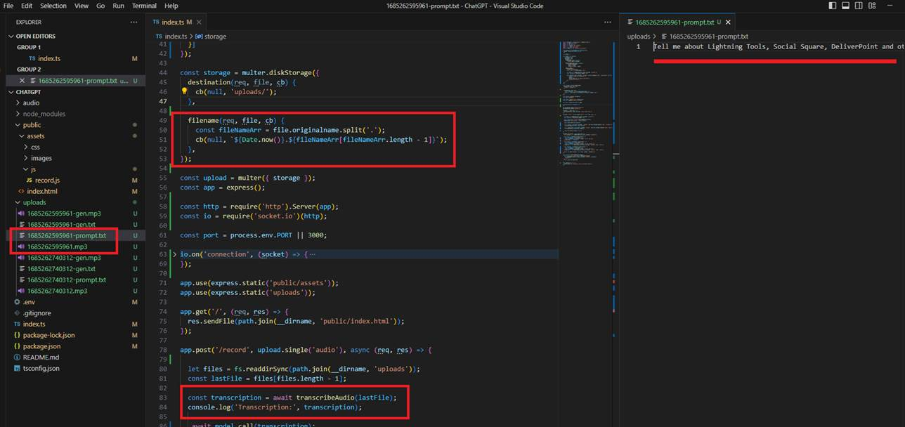
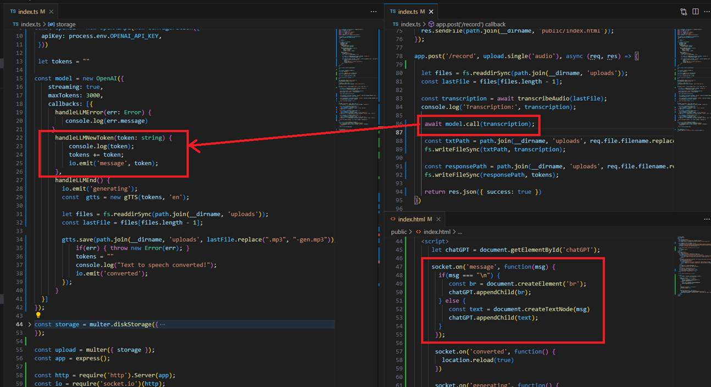
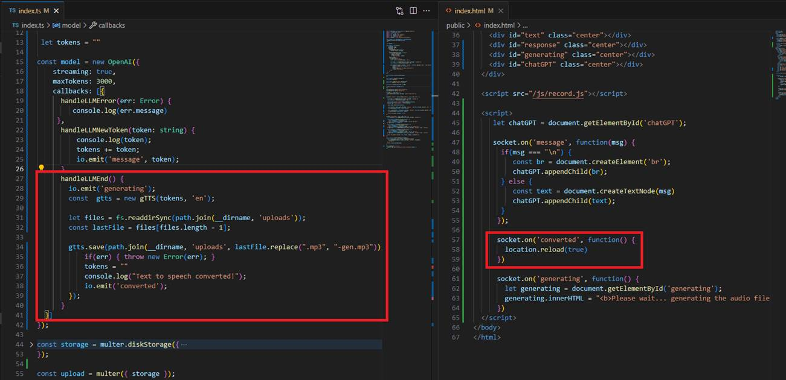
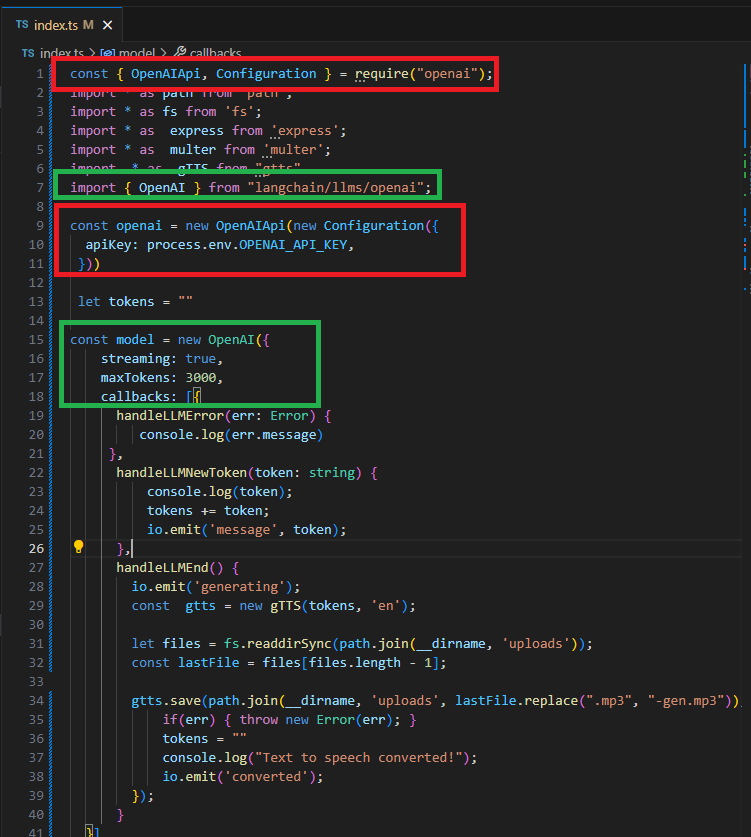

Speech to Text to Speech
GitHub Repository: https://github.com/Ashot72/Speech-to-Text-to-Speech
Video Link: https://youtu.be/PZWEQjuDxog
I built a Node.js app where you can ask questions to ChatGPT using voice prompts, see the ChatGPT-like word-by-word answer, and then listen to the responses with voice.
Voice to Text: I turn an audio into text using Whisper https://openai.com/research/whisper which is an OpenAI Speech Recognition Model that turns audio
into text with up to 99% accuracy. Whisper is a speech transcription system form the creators of ChatGPT. Anyone can use it, and it is completely free.
The system is trained on 680 000 hours of speech data from the network and recognizes 99 languages.
Generating Answers: To generate word-by-word answers and display them, we utilize the LangChain streaming API https://js.langchain.com/. This API allows
us to receive words in real-time as they are generated. Additionally, we use Node.js Socket.IO, which enables bidirectional and event-based communication between
the client and server.
Text to Voice: I use gTTS.js https://www.npmjs.com/package/gtts which is Google Text to Speech JavaScript library originally written in Phyton.

Figure 1
Once you record your voice prompt and click on the Save button, the app generates an .mp3 file, and Whisper extracts the text from the audio.

Figure 2
Next, we pass the extracted prompt to LangChain to get words streamed back as they are generated and we display them to the client using Socket.IO.

Figure 3
Once the response is generated, we create an audio file based on that response so the user can listen to the answer.

Figure 4
You may notice that we used two instances of OpenAI. The LangChain OpenAI uses streaming, which we need, but the OpenAIApi does not support it. Additionally, the
OpenAiApi supports Whisper transcription, but LangChain OpenAI does not. Therefore, we use two instances with the same key located in the .env file.